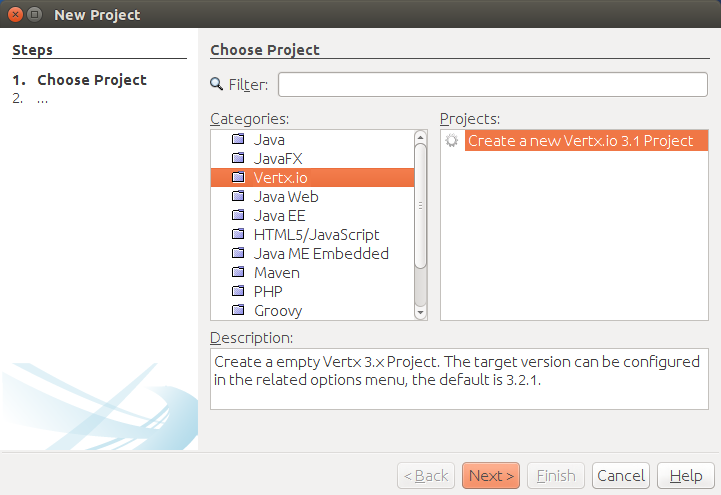
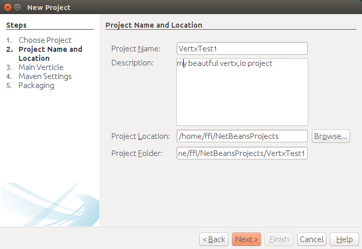
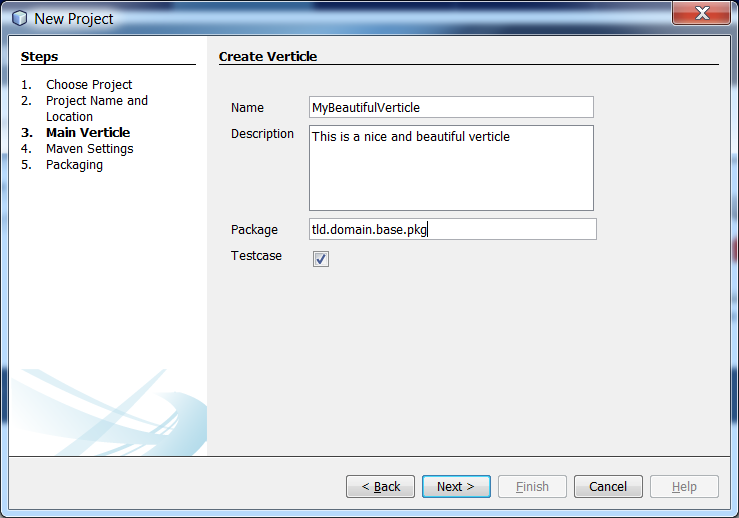
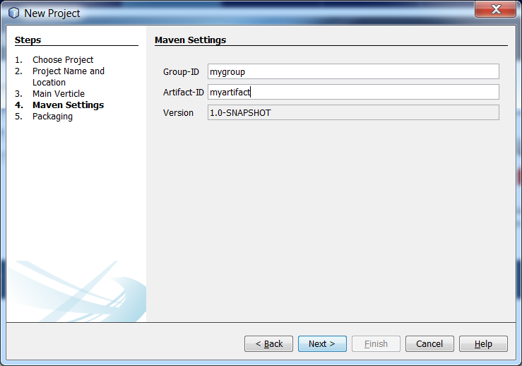
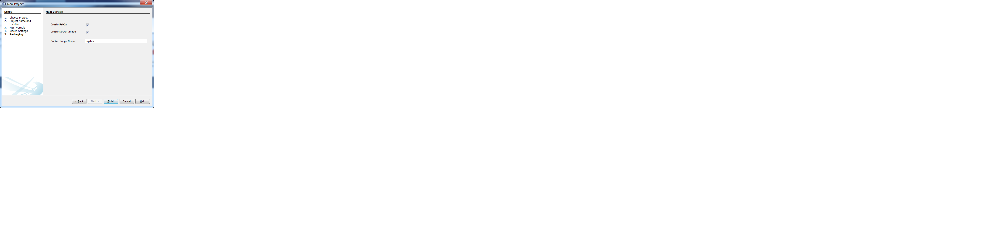

Its possible to create a new Maven based Vertx.io project in a few little steps.
Open create new projects and select "Create new Vertx.io Project"
Enter the basic settings for the new project. This includes project name, location and description.
A Vertx.io project requires at least one main verticle. Enter all required information about it.
By enabling the related check box also a (empty) test case will be created for it.
Enter the basic maven configuration. This includes group id, artifact id and version.
The default settings can be defined in the related options panel.
Configure the packaging options.
The default settings can be defined in the related options panel.
There are some dependencies between the settings: